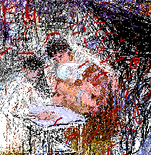

The Israelis bombed the ancient city of Sur till it seemed it could not live. "On the following day in the evening an unconscious one month old baby arrived in the arms of his hysterical mother seeking our help. She had left Sur with evacuees on the road by the see where Israeli planes destroyed their vehicle. She walked for hours and hours in wild fields with her baby in her arms until she reached Damour where she found someone to bring her to our hospital. She knew not how or if the rest of her children and husband escaped. The baby was hit in the head in several places and needed immediate surgery." This littlest Palestinian subject of our loving work is the youngest target of Israeli terrorism. They feared him and still do. It is called guilt and greed.
My Grandmother... The Town of Beisan... The Arab City of Jerusalem... Sabah Told Me... My Home in Yafa... Khader Told Me... Olives of Palestine... Our Students... A Taxi Ride in Bethlehem... Written by Doctor Fathihe Saudi... Hasan Told Me... A Visit to Kafr Qasem... The Artist of Kafr Qasem... The Massacre at Kafr Qasem (not yet ready)
Tayseer Barakat, painter... Rana Bishara, painter and installation artist... Sari Khouri, painter... Abdel Tamam, painter... Vera Tamari, ceramist and painter... Adnan Yahya, painter and graphic artists...